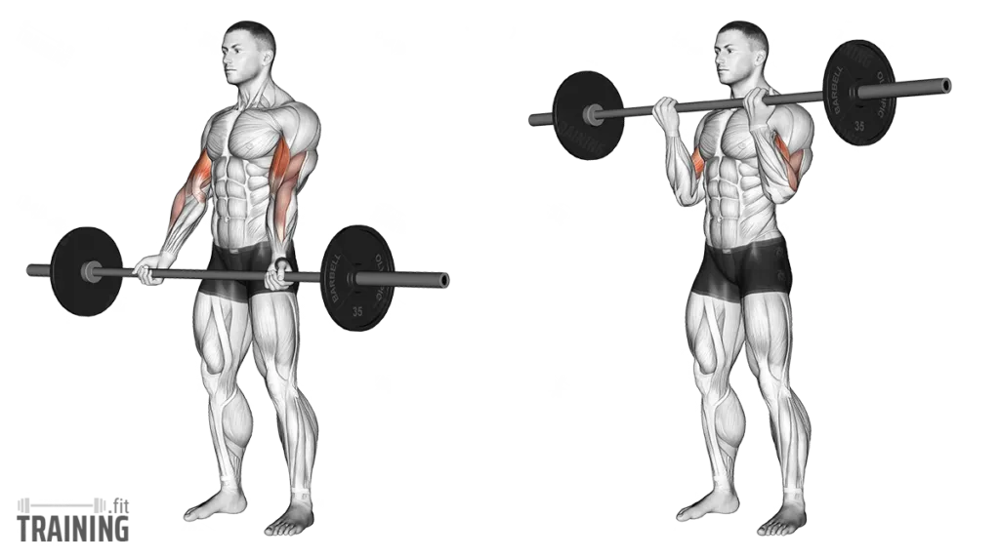
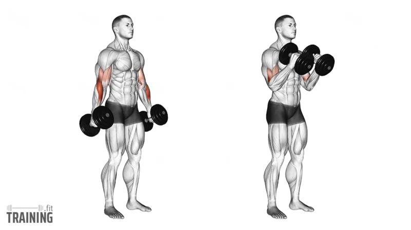
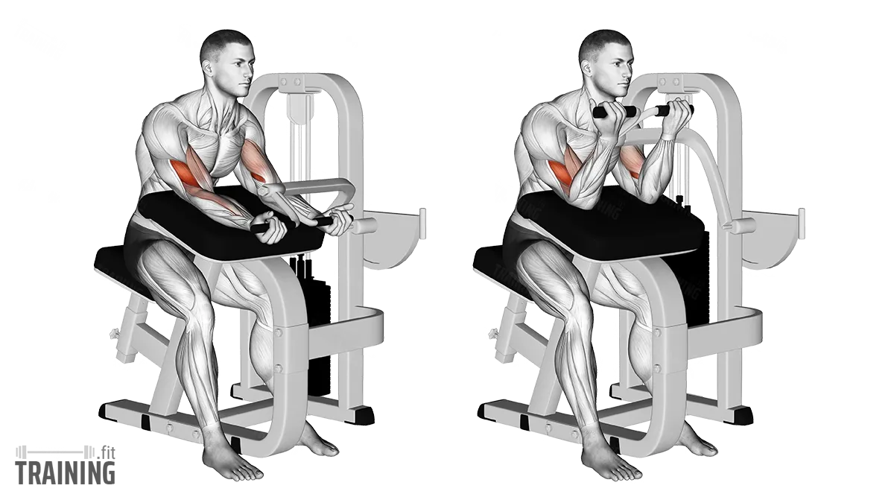
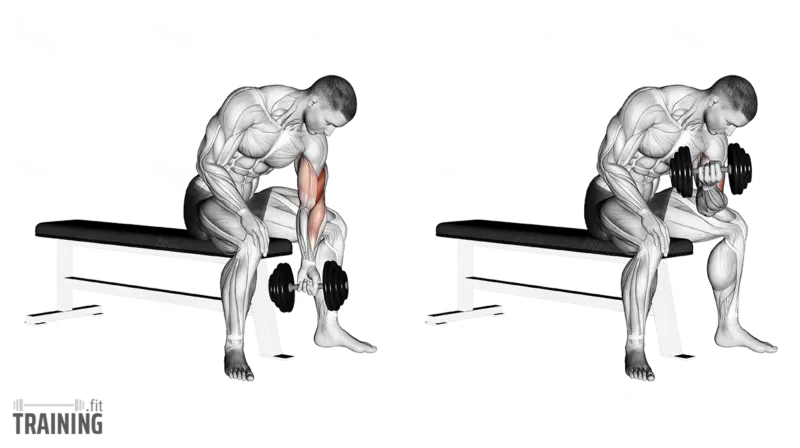
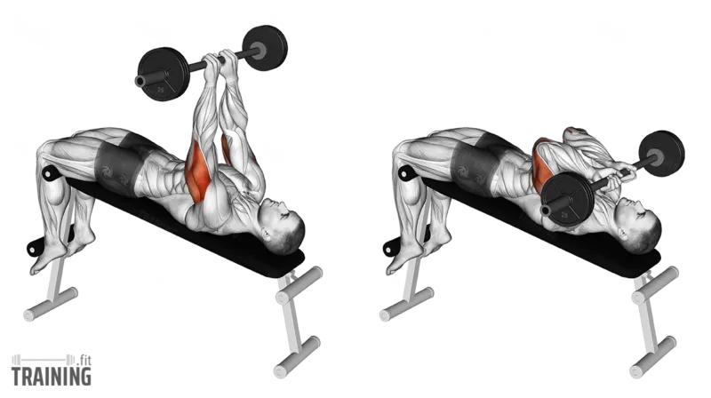
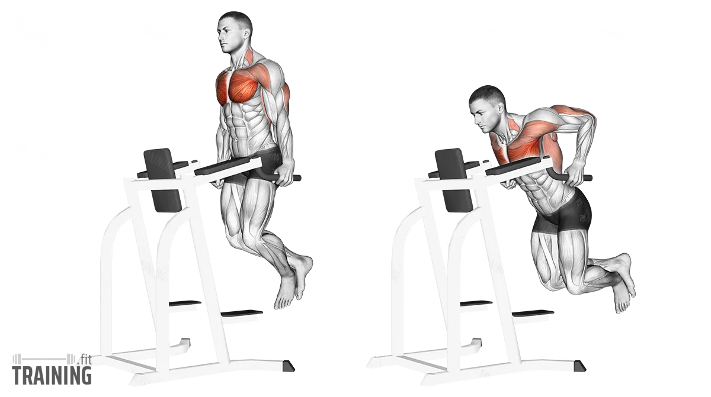
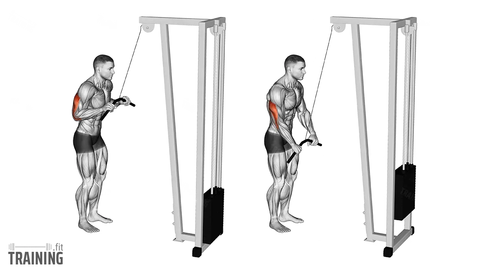
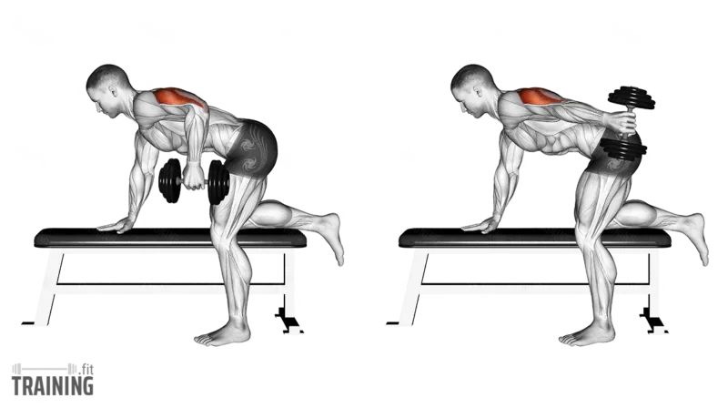

|  |
Barbell Curls |
Biceps Brachii |
Barbell'i omuz genişliğinde tutarak avuç içleriniz yukarı bakacak şekilde kavrayın. Dirseklerinizi sabit tutarak ağırlığı omuz hizasına kadar kaldırın ve kontrollü bir şekilde başlangıç pozisyonuna indirin. |
Vücudu sabit tutarak ağırlığı sallamaktan kaçının ve hareket sırasında dirseklerinizi öne doğru hareket ettirmemeye özen gösterin. |
|  |
Hammer Curls |
Brachialis |
Dumbbell'ları avuç içleriniz birbirine bakacak şekilde nötr tutuşla kavrayın. Dirseklerinizi sabit tutarak ağırlıkları omuz hizasına kadar kaldırın ve ardından kontrollü bir şekilde indirin. |
Vücudu sallamaktan kaçının ve hareketi dirseklerinizi sabit tutarak kontrollü bir şekilde gerçekleştirin. |
|  |
Preacher Curls |
Biceps Brachii |
Preacher bench'te oturarak kollarınızı ped üzerine yerleştirin, barı veya dumbbell’ı avuç içleriniz yukarı bakacak şekilde kavrayın. Dirseklerinizi sabit tutarak ağırlığı yukarı kaldırın, ardından kontrollü bir şekilde indirin.. |
Hareketi yavaş ve kontrollü yaparak momentumdan kaçının ve dirseklerinizi ped üzerinde sabit tutmaya özen gösterin. |
|  |
Concentration Curls |
Biceps Brachii, Brachialis |
Oturur pozisyonda bir dumbbell'ı tutarak dirseğinizi uyluğunuzun iç kısmına yerleştirin. Ağırlığı kontrollü bir şekilde yukarı kaldırın, ardından başlangıç pozisyonuna indirin. |
Hareket sırasında sırtınızı dik tutun, yalnızca kol kaslarınızı kullanarak kaldırışı gerçekleştirin ve momentumdan kaçının. |
|  |
Skull Crusher |
Triceps Brachii |
Düz bir bench'e sırtüstü uzanın, barbell'i avuç içleriniz öne bakacak şekilde tutarak dirseklerinizi bükün ve barı alnınıza doğru indirin. Kontrollü bir şekilde dirseklerinizi düzelterek barı tekrar yukarı kaldırın. |
Dirseklerinizi sabit tutarak hareketi sadece triceps kaslarınızla gerçekleştirin ve ağırlığı alnınıza yaklaştırırken kontrollü olun. |
|  |
Dips |
Triceps Brachii, Pectoralis Major |
Paralel barlara tutunarak kollarınızı düzleştirin, ardından dirseklerinizi bükerek vücudunuzu kontrollü bir şekilde alçaltın. Kollarınızı tekrar düzleştirerek başlangıç pozisyonuna dönün. |
Omuz eklemlerine aşırı yük bindirmemek için dirseklerinizi çok fazla açmayın ve hareket sırasında vücudunuzu dik tutun. |
|  |
Cable Tricep Pushdowns |
Triceps Brachii |
Kablo makinesine bağlı barı veya ipi avuç içleriniz aşağı bakacak şekilde kavrayın. Dirseklerinizi sabit tutarak ağırlığı aşağı doğru itin ve ardından kontrollü bir şekilde başlangıç pozisyonuna geri getirin. |
Dirseklerinizi vücudunuza sabit tutun, sırtınızı dik koruyun ve hareket sırasında omuzlarınızı kullanmaktan kaçının |
|  |
Kickbacks |
Triceps Brachii |
Dizleriniz hafif bükülü ve gövdeniz öne eğik pozisyonda, dumbbell’ı tutarak dirseğinizi sabit bir şekilde vücudunuza yakın tutun. Kolunuzu geriye doğru düzleştirerek ağırlığı kaldırın ve ardından başlangıç pozisyonuna indirin. |
Dirseklerinizi sabit tutarak hareketi yalnızca triceps kaslarınızla yapın ve omuzlarınızı hareket ettirmekten kaçının. |